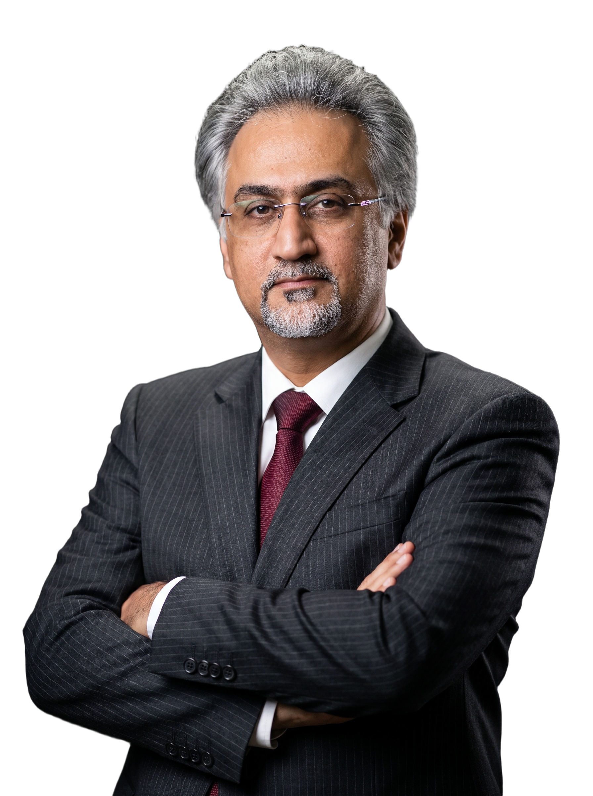

دکتر شاهین باستانینژاد
جراح و متخصص گوش، گلو و بینی | عضو هیئت علمی دانشگاه علوم پزشکی تهران | دبیر کمیته علمی رینولوژی
زندگینامه حرفهای
دکتر شاهین باستانینژاد در سال ۱۳۵۷ متولد شد. ایشان تحصیلات پزشکی عمومی خود را از سال ۱۳۷۵ در دانشگاه علوم پزشکی اصفهان آغاز کرد و پس از اخذ مدرک دکترای پزشکی عمومی، در آزمون دستیاری تخصصی پذیرفته شد و از سال ۱۳۸۴ تا ۱۳۸۸ دوره تخصصی گوش، گلو و بینی را در دانشگاه علوم پزشکی تهران گذراند.
دکتر باستانینژاد در آزمون بورد تخصصی گوش، گلو و بینی رتبه چهارم کشوری را کسب نمود. پس از اتمام دوره تخصصی، فلوشیپ تخصصی خود را در بیمارستان امیراعلم تهران گذراند و از آن پس به عنوان عضو هیئت علمی دانشگاه علوم پزشکی تهران مشغول به کار شد.
ایشان از سال ۱۳۹۶ به عنوان معاون آموزشی بیمارستان امیراعلم تهران فعالیت میکنند و در حال حاضر دبیر کمیته علمی رینولوژی انجمن جراحی پلاستیک بینی ایران میباشند. در این سمت، نقش فعالی در ارتقاء استانداردهای آموزشی و علمی جراحی بینی در سطح کشور دارند.
دکتر باستانینژاد با باور عمیق به اینکه بینی عضوی است جهت نفس کشیدن، رویکردی ترکیبی از زیباییشناسی و عملکرد طبیعی را در جراحی دنبال میکند. به گفته ایشان: «مهمترین اصل در جراحی زیبایی بینی این است که از یک سادگی نامطبوع به پیچیدگیای برسیم که ورای آن، سادگی مطبوعی حاصل شود.»
سوابق تحصیلی و تخصصی
۱۳۷۵–۱۳۸۲
دکترای پزشکی عمومی
دانشگاه علوم پزشکی اصفهان
۱۳۸۴–۱۳۸۸
تخصص گوش، گلو و بینی
دانشگاه علوم پزشکی تهران — رتبه چهارم بورد تخصصی کشوری
۱۳۸۸–۱۳۸۹
فلوشیپ تخصصی رینوپلاستی
بیمارستان امیراعلم تهران
از ۱۳۸۸
عضو هیئت علمی دانشگاه علوم پزشکی تهران
بیمارستان امیراعلم — تدریس و جراحی تخصصی
از ۱۳۹۶
معاون آموزشی بیمارستان امیراعلم تهران
ارتقاء استانداردهای آموزش پزشکی در حوزه گوش، گلو و بینی
در حال حاضر
دبیر کمیته علمی رینولوژی
انجمن جراحی پلاستیک بینی ایران — نقش فعال در استانداردسازی ملی
انجمنها و عضویتهای حرفهای
فلسفه و رویکرد ما
دکتر باستانینژاد معتقد است جراحی بینی نباید صرفاً یک عمل زیبایی باشد؛ تناسب، طبیعی بودن نتیجه و حفظ عملکرد تنفسی در اولویت قرار دارد. ایشان در هر مشاوره، واقعبینانه درباره امکانات و محدودیتهای جراحی صحبت میکنند تا بیمار با انتظاری درست وارد فرایند شود.
«مهمترین اصل در جراحی زیبایی بینی این است که از یک سادگی نامطبوع به پیچیدگیای برسیم که ورای آن، سادگی مطبوعی حاصل شود… بینی عضوی است جهت نفس کشیدن.»
دکتر شاهین باستانینژاد
.webp)
.webp)
.webp)
.webp)
.webp)
.webp)
.webp)
.webp)
.webp)
.webp)
.webp)
.webp)
.webp)
دورههای بینالمللی و مدارک تخصصی

هفتمین کنگره بینالمللی رینوپلاستی و جراحی پلاستیک صورت

دوره مستر دیسکشن رینولوژی و جراحی پلاستیک بازسازی

هشتمین کنگره بینالمللی انجمن رینولوژی ایران

سومین دوره بینالمللی رینولوژی شیراز (SRIC)

گواهی بازسازی دریچه بینی — دانشگاه علوم پزشکی تهران

گواهینامه بینالمللی — تاجیکستان

چهارمین کنفرانس بینالمللی گوش، گلو و بینی — کردستان عراق

پنجمین کنفرانس و نمایشگاه بینالمللی گوش، گلو و بینی — کردستان عراق

چهارمین کنفرانس انجمن گوش، گلو و بینی — کردستان عراق

گواهی حضور — پنجمین کنفرانس گوش، گلو و بینی کردستان عراق

مجوز مراکز درمانی و زیبایی